Mind Your Language: Slang, Syntax, and the Beautiful Chaos of a 1970s English Classroom
A complete English lesson built from the classic British sitcom Mind Your Language — Cockney rhyming slang, treacherous homophones, unforgettable idioms, and the art of surviving your own mistakes.
🎮 Play the GameIn 1977, British television handed millions of viewers an unusual gift: a sitcom set entirely inside an adult English class in London. The show was called Mind Your Language, and it ran until 1986, turning homework, pronunciation drills, and vocabulary lists into prime-time comedy. The title itself is a small language lesson, because to mind your language means to choose your words carefully. Few television comedies have ever been built so directly on the mechanics of the very language they were filmed in.
This article turns the fourth episode of the first season — All Through the Night — into a complete English lesson. The material covers everything from consonant sounds and homophones to Cockney rhyming slang and cross-cultural humor, and every claim below comes straight from the lesson presentation. Along the way, you will meet a teacher fighting for order, a caretaker who sounds like he is speaking in code, and six students whose mistakes are funnier and wiser than they first appear. By the end, you will know why a Londoner might call a staircase a set of apples and pears, and why that knowledge matters more than it sounds.
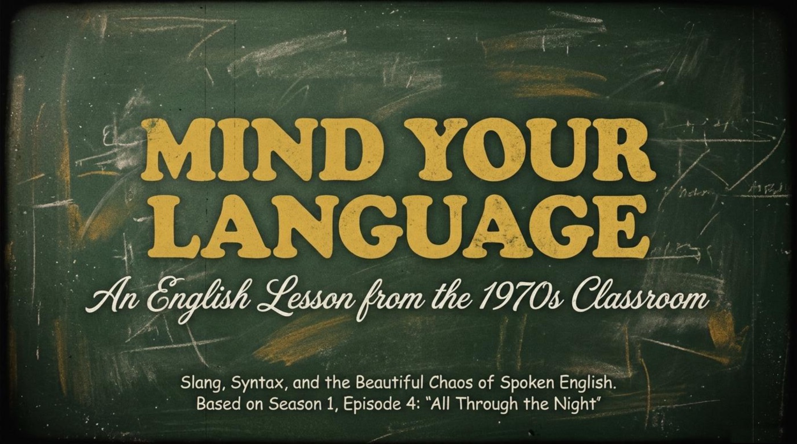
📚 The Episode: One Classroom, Six Countries, and a Locked Door
Evening classes in a 1970s London college provide the setting for the entire series. The lesson presentation introduces the show with a paragraph worth reading twice: “Mind Your Language (1977–1986) is a classic British sitcom centered on an adult English as a Foreign Language (EFL) class in London. The series finds its humor in cultural collisions, literal translations, and the sheer bravery required to learn a new language as an adult.” That framing matters for language learners, because the show treats the classroom not as a backdrop but as the main engine of every joke. Each episode transforms ordinary lesson material — the alphabet, pronunciation drills, vocabulary lists — into a comedy of misunderstandings, and each misunderstanding quietly teaches something real about English.
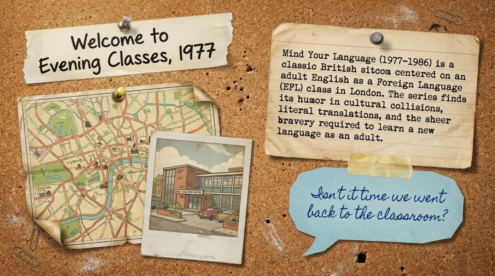
Three adults hold the institution together. Mr. Brown is the long-suffering teacher, and his complaint opens the episode with perfect classroom realism: “I spend a lot of time preparing these lessons, and some of you don’t take them half as seriously as you might!” 🎓 Miss Courtney, the principal, guards the staff room schedule with iron precision: “Ten minutes is the normal time allowed for tea, Mr. Brown.” 🎓 Sid, the caretaker, completes the trio and casually delivers one of the episode’s first language puzzles: “I’m just happy to rest my plates of meat!” The phrase sounds bizarre until you learn that plates of meat is Cockney rhyming slang for feet. In one line of caretaker chatter, the episode has already smuggled in its first linguistics lesson.
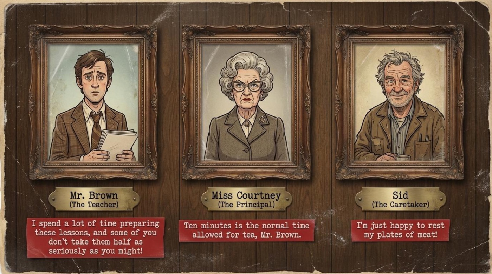
The heart of the show is the class register, which the presentation titles “The Melting Pot.” Each student arrives with a distinct learning personality and a signature line. Ali from Pakistan is described as “prone to dramatic literalism” and announces, “Excuse please... we are all going to die.” Giovanni from Italy is described as “enthusiastic but aggressive with idioms” and flares up by comparing poor Mr. Brown to Italian ravioli. Su Lee from China “struggles heavily with consonant phonetics” and insists, “It is olange.” Anna from Germany is “hyper-logical and easily confused by context,” Juan from Spain “relies on urban, functional logic over vocabulary,” and Taro from Japan is “polite, formal, reliant on proverbs,” which he demonstrates with the single word “Potarto.”
Pay attention to how much linguistic information hides inside these one-line portraits. The presentation is not simply listing nationalities; it is cataloguing real, well-documented learner strategies. Literal translation, over-reliance on logic, phonetic transfer from a first language, and proverb-based communication are all recognized phenomena in language acquisition. The show compresses them into comedy, and the lesson presentation unpacks them into teaching points. Notice that every portrait on the register is anchored to a specific, quotable language error, which makes the humor diagnostic rather than random.
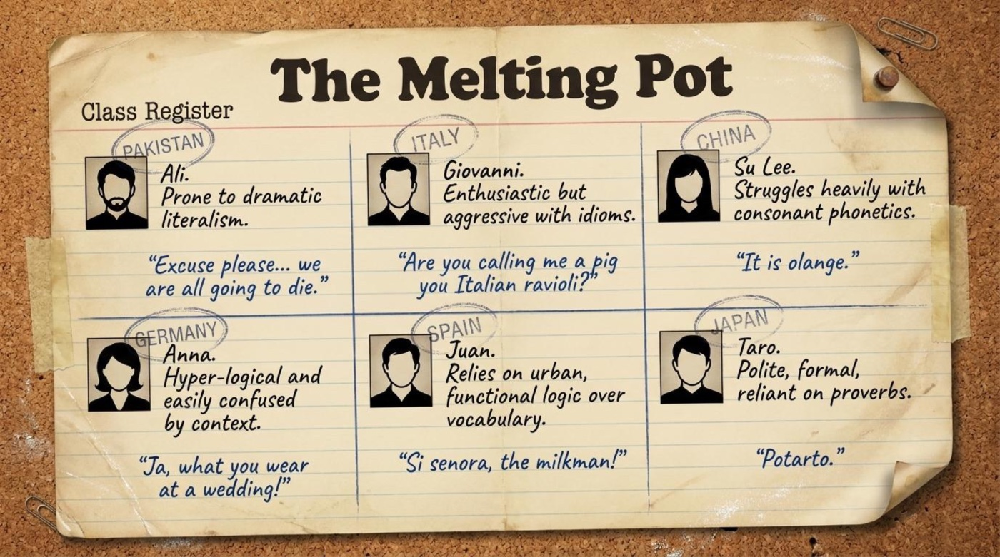
The first lesson block tackles pronunciation. As the material states, “Spoken English is notoriously difficult on the tongue.” Mr. Brown tries to help Su Lee separate her R and L sounds with two classic prompts: “Orange.” and “Around the rugged rocks the ragged rascal ran.” Su Lee’s honest attempts come back as “Olange.” and “Alound luged locks, lagged lascal lan.” The scene is gentle, funny, and instantly recognizable to anyone who has fought with a new sound system. The tongue twister works here as minimal-pair training in disguise: it forces the learner to contrast R and L at speed, in connected speech, rather than in isolation.
The practical takeaway is to steal Mr. Brown’s method deliberately. Choose one contrast that gives you trouble, such as R and L, B and V, or TH and S. Find a tongue twister built on that contrast and repeat it slowly at first, then faster, then inside a sentence of your own. Record yourself once a week and compare the recordings, because gradual progress is invisible from day to day. The technique costs nothing, takes five minutes, and trains the exact muscles the scene is joking about.
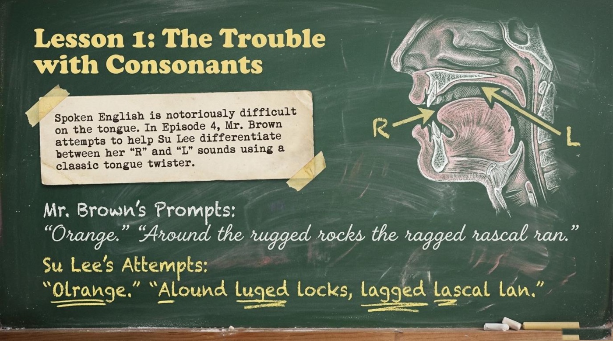
The second lesson block covers homophones and literal translation. Mr. Brown holds up a paper bag, reveals its contents, and announces, “It’s flour!” Anna beams and replies, “Ja, what you wear at a wedding!” The presentation circles the error in red and explains it directly: “Confusing baking flour with a wedding flower!” The two words sound identical but live in completely different worlds, and English is full of such pairs. In the same block, Mr. Brown asks the class to name a pig after it has been killed, and Ali proudly answers, “It is dead pig!” The material’s verdict is precise: “Logical, but incorrect! English uniquely separates the live animal (pig) from the culinary meat (pork).”
Both errors come from the same healthy instinct: learners build bridges from what they already know. Anna connects a new word to a phrase she trusts, and Ali applies perfectly reasonable logic to an irregular system. Remember that English historically borrowed its meat vocabulary from Norman French while keeping the animal names from Anglo-Saxon, which is why the farm and the dining table speak different languages. The practical advice is to treat high-frequency homophone pairs — flour and flower, sea and see, write and right — as vocabulary entries in their own right, with a fixed mental image attached to each spelling. The episode also demonstrates a habit worth copying: once a classmate makes a homophone mistake, the whole class remembers both words more vividly than any dictionary entry could teach them.
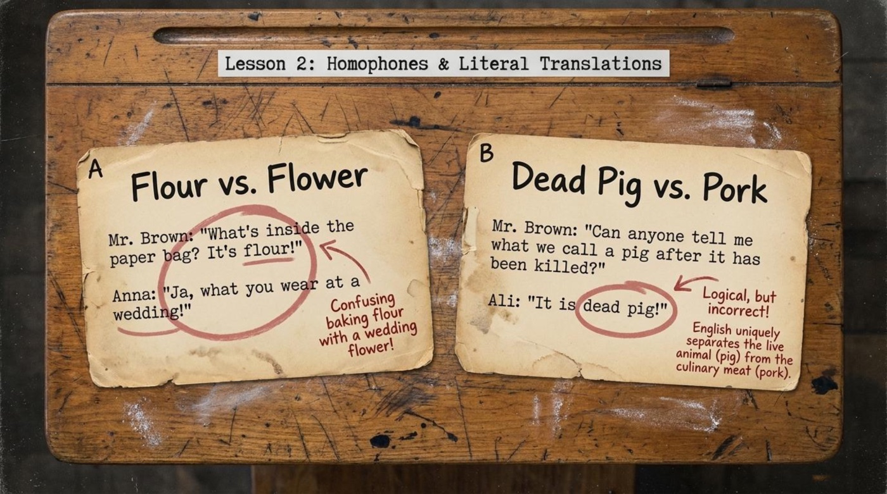
The episode’s most quoted moment earns its own titled incident in the presentation. Juan says, “Cow juice.” Mr. Brown corrects him with “No, milk” and asks where milk comes from. Juan answers with total confidence: “Si senora, the milkman!!” Mr. Brown surrenders with, “Quiet please! We get milk from cows.” The presentation’s commentary turns the joke into linguistics: “A brilliant example of urban interference! The student knows the literal, daily source of his food (the milkman) rather than the agricultural source. Practicality defeats vocabulary!”
It is important to understand what urban interference means here. Juan’s English is not broken; his mental model of milk production is simply city-shaped, and his vocabulary faithfully reflects his experience. The moment is funny because the class and the audience expect the textbook answer, yet Juan’s answer is true to his world. Language teachers recognize this kind of transfer as a natural stage of acquisition, and the presentation treats it with visible affection rather than mockery. The lesson for learners is to describe your own reality first and patch the vocabulary gaps second, because communication built on real experience survives contact with native speakers far better than memorized textbook lines.
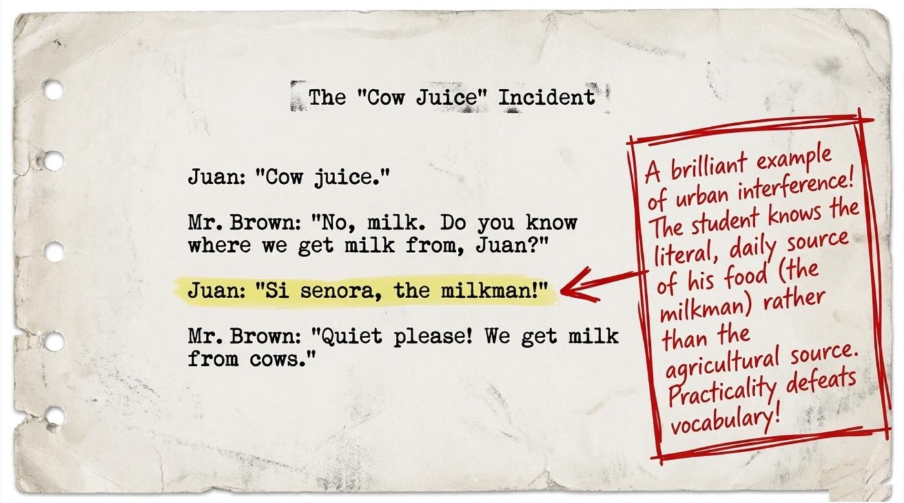
The lesson then opens the door to one of London’s most famous speech traditions. As the material explains, “The class assumes caretaker Sid is speaking a foreign language. He is actually using Rhyming Slang — an East London dialect where a rhyming phrase replaces the intended word.” The presentation maps six of Sid’s expressions on a corkboard connected with red string, like a detective’s evidence board. The humor lands because the students hear a code and assume a foreign language, when in fact they are hearing their destination: the local English of the city they moved to.
- Uncle Ned = bedNed rhymes with bed
- Uncle Dick = sickDick rhymes with sick
- Plates of meat = feetmeat rhymes with feet
- Jack the Dandy = brandyDandy rhymes with brandy
- Apples and pears = stairspears rhymes with stairs
- Mince pies = eyespies rhymes with eyes
For learners, rhyming slang is best approached as culture first and vocabulary second. Recognition beats production here, because almost nobody needs to speak Cockney, yet every visitor to London benefits from knowing that a dog and bone is a telephone. Try collecting five rhyming slang expressions and tracing their logic out loud: wife rhymes with trouble and strife, talk rhymes with rabbit and pork, and telephone rhymes with dog and bone. Once you can hear the rhyme, the code stops being a wall and becomes a puzzle you already know how to solve. The presentation includes a matching game for exactly this purpose, and the interactive game linked at the top of this article trains the same skill.
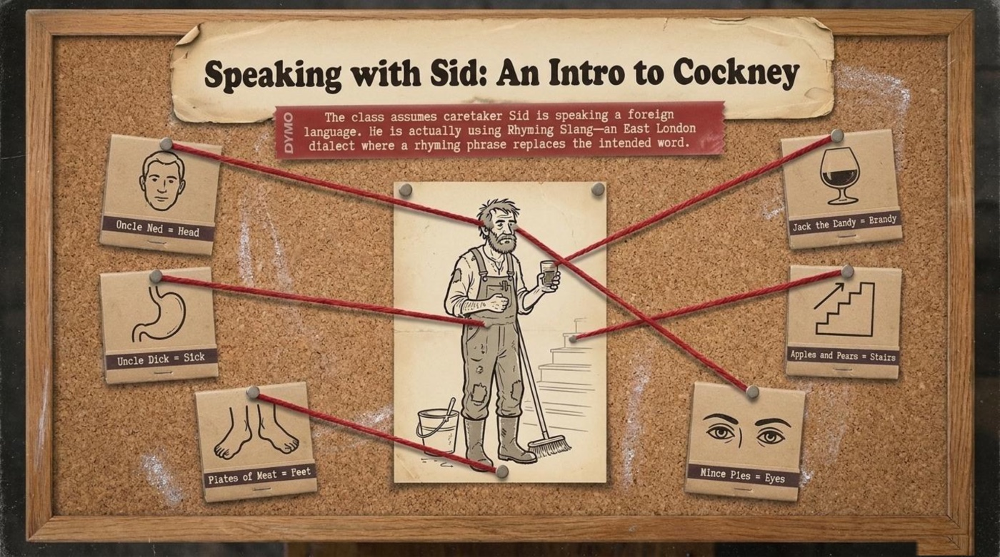
Then the episode adds its plot engine. According to the presentation’s timeline, at 10:00 PM Mr. Brown keeps the class late with the command, “Put your shoulders to the wheel! Page 53!” At 10:30 PM, Sid accidentally locks the school from the outside, and a voice cries, “I think I’ve broken my arm!” By 11:03 PM comes the realization: “Only another 58 hours till Monday morning.” Ali reacts with his signature line, “We are all going to die!”, and Mr. Brown snaps back with the episode’s best threat: “Ali, if you say we are all going to die once more, I shall strangle you!” 🎓 The locked classroom matters dramatically, because it forces the lesson off the page and into survival mode.
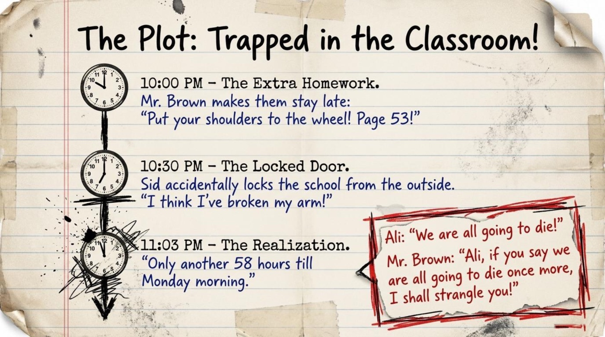
The trapped students respond the way people have always responded to long nights: they tell stories. The presentation introduces the segment with a quiet thesis, “Humor rarely translates perfectly across cultures. Locked in, the students try telling jokes to survive the weekend.” Giovanni tells a dark medical joke about a doctor chopping off the wrong leg to cure gangrene, and the punchline lands on a despairing cry to Santa Maria about the good news. Taro offers a polite but confusing proverb instead of a joke: “Old Japanese proverb say... Man who seduces girl on hillside, not on the level.” Danielle tells a highly dramatic tale about a Catholic priest trying to stop a man jumping off the Eiffel Tower. None of the jokes survives translation cleanly, and that failure is exactly the point.
Notice what the scene teaches about humor, which is arguably the hardest register of any language. Jokes depend on timing, cultural references, and shared assumptions, so a grammatically perfect retelling can still land in silence. The students keep telling jokes anyway, and the attempt itself builds the bond that the weekend requires. For learners, the advice is to prepare one short, culturally specific story from your own country and rehearse it in English until it feels comfortable. A prepared story removes the pressure of improvisation and gives you something real to offer when conversation needs saving.
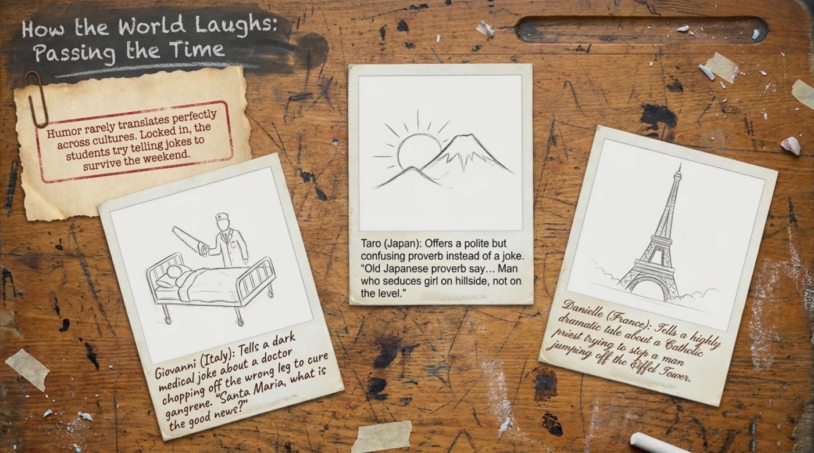
💡 Vocabulary and Language Takeaways
The lesson presentation includes a dedicated idiom bank, and this section expands each entry with its literal sense, its contextual sense, and the exact way the material uses it. Read the explanations first, then test yourself with the flip cards below. The vocabulary cluster around Cockney slang is deliberately playful, while the three idioms come straight from the episode’s dialogue and the presentation’s “Idioms in the Wild” collection.
to take the mick idiom · British slang
Literal meaning: no literal image survives; it is pure British slang with a disputed origin.
Figurative meaning: to mock someone, to tease them, or to treat a situation as a joke.
From the material: “I think you’re taking the mick!” — the students shout this when Sid’s speech sounds like deliberate mockery aimed at them.
How the material explains it: the presentation defines it as “Making fun of someone” and sets the context — “The students think Sid is mocking them.” The placement shows that the idiom lives exactly on the border between friendly teasing and insult, which is why tone matters so much when you use it.
to put your shoulders to the wheel idiom
Literal meaning: to lean against a cart with your shoulders and push it out of the mud.
Figurative meaning: to work hard and apply yourself to a task.
From the material: “Put your shoulders to the wheel! Page 53!” — Mr. Brown uses the idiom as a command when he keeps the class late.
How the material explains it: the presentation gives the definition “To work hard and apply yourself” with the context “Mr. Brown forcing the class to stay late to finish page 53.” The image is physical effort applied to a shared goal, which suits a class working against a deadline.
a wild goose chase idiom
Literal meaning: a chase after wild geese, which scatter in every direction and refuse to be caught.
Figurative meaning: a foolish, complicated, and hopeless pursuit.
From the material: Miss Courtney is dragged out of bed in the middle of the night by a drunk Sid, and her ruined evening becomes the episode’s example of wasted effort.
How the material explains it: the presentation defines it as “A foolish, complicated, and hopeless pursuit” with the context “Miss Courtney complaining after being dragged out of bed by a drunk Sid.” The idiom measures effort that was doomed from the start, and the principal’s ruined night is the perfect illustration.
rhyming slang noun · uncountable
Literal meaning: slang built by replacing an intended word with a phrase that rhymes with it.
Figurative meaning: a local code of East London that doubles as an identity badge for its speakers.
From the material: the class hears Sid talking and concludes that he has switched to a foreign language.
How the material explains it: the presentation calls it “an East London dialect where a rhyming phrase replaces the intended word.” The definition highlights mechanism over geography — the rhyme is the engine, and London is merely the accent.
plates of meat Cockney rhyming slang · noun phrase
Literal meaning: dishes that hold served meat.
Figurative meaning: feet.
From the material: “I’m just happy to rest my plates of meat!” — Sid says it after a long day of buckets and staircases.
How the material explains it: the presentation’s corkboard diagram draws a red string from the phrase to a drawing of feet, and the caretaker’s own line proves the meaning in action.
dog and bone Cockney rhyming slang · noun phrase
Literal meaning: a dog beside a bone.
Figurative meaning: a telephone.
From the material: the pop quiz in the presentation matches telephone with dog and bone as its first pair.
How the material explains it: the teacher’s answers confirm the match and add the same logic for talk: “Yes, ‘Rabbit’ = to talk!” The quiz turns the dialect into a solvable puzzle instead of a wall of noise.
homophone noun
Literal meaning: from Greek roots meaning “same sound.”
Figurative meaning: a word that sounds identical to another word but differs in spelling and meaning.
From the material: “Ja, what you wear at a wedding!” — Anna hears the word flour and answers with the word flower.
How the material explains it: the presentation titles the whole block “Homophones & Literal Translations” and annotates the error with “Confusing baking flour with a wedding flower!” The annotation is itself a mini-lesson: both words are correct, and only context chooses between them.
tongue twister noun
Literal meaning: a phrase that ties your tongue in knots when spoken quickly.
Figurative meaning: a pronunciation exercise disguised as a game.
From the material: “Around the rugged rocks the ragged rascal ran.” Su Lee’s version comes back as “Alound luged locks, lagged lascal lan.”
How the material explains it: the presentation describes how Mr. Brown “attempts to help Su Lee differentiate between her ‘R’ and ‘L’ sounds using a classic tongue twister,” which reveals the exercise’s real purpose as phonetic training.
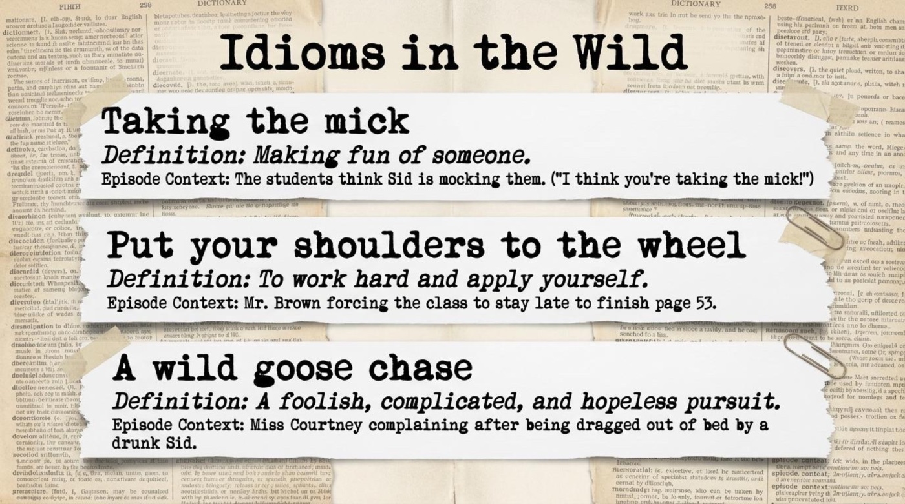
Flip the deck and test yourself
The cards below hold the same eight items in a testable format. Tap or click a card to turn it over, and use the button to flip the whole deck at once. Each back side contains the literal meaning, the contextual meaning, a quoted example, and a short note on why the item matters.
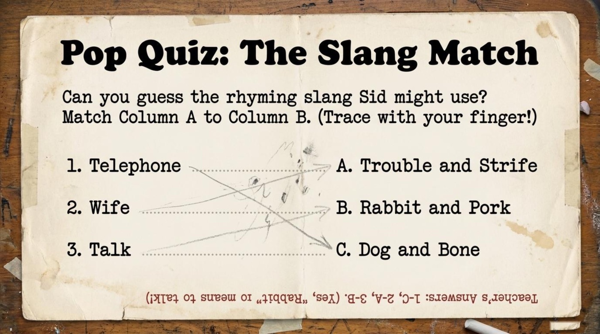
📌 Deeper Meaning — Metaphors and Symbols
Beneath the jokes, the presentation builds a small system of symbols, and each one rewards a closer look. Four elements carry most of the meaning, and together they turn a locked-room farce into a statement about what learning a language actually is.
The Melting Pot — a classroom as a miniature world
The class register carries this title in the presentation, and the choice is deliberate. A melting pot is a society in which many cultures blend into one, and the classroom enacts the metaphor in miniature: seven nationalities, one language, one room. The presentation frames the roster as “Class Register” under the heading “The Melting Pot,” which quietly asserts that the students are not foreign visitors to English but ingredients of a new English-speaking community. Read this way, every accent on the page becomes a stage in the same shared process rather than a defect to be corrected. The metaphor also explains the show’s warmth, because a melting pot never mocks its ingredients.
The Locked Door — immersion by accident
The locked classroom is the episode’s central situation, and the presentation’s timeline treats it as a turning point. Once the door closes, English stops being homework and becomes the only tool the group owns for getting through 58 hours together. The locked room works as an immersion metaphor: progress begins exactly when escape becomes impossible. Mr. Brown’s line “Only another 58 hours till Monday morning” converts panic into arithmetic, which is very much what language learning feels like from the inside. The presentation’s clock diagram — 10:00 PM, 10:30 PM, 11:03 PM — turns the farce into a countdown, and a countdown is simply a study plan that refuses to negotiate.
Cow Juice — the honest first draft
The presentation promotes Juan’s two-word answer to the status of a titled incident, and the commentary explains why: “A brilliant example of urban interference! The student knows the literal, daily source of his food (the milkman) rather than the agricultural source. Practicality defeats vocabulary!” The phrase cow juice becomes a symbol for every learner’s first draft of a foreign language — a word built from honest observation instead of approved vocabulary. The presentation’s affection for the error sends a clear signal that such drafts deserve respect rather than shame. First drafts of words are to language learning what sketches are to painting, and nobody ever learned to paint by erasing the pencil lines before drawing them.
The Cycle of Brave Attempts — mistakes as steps, not walls
The presentation closes with a chalkboard diagram titled “The Beauty of ‘Broken’ English,” and the diagram is a four-step loop: “1. Brave Attempt (Speaking without knowing all the rules). 2. Misunderstanding (Literal translations like ‘cow juice’). 3. Shared Comedy (The humor of the cultural collision). 4. Human Connection (The classroom bonds over the shared struggle).” The loop matters because it reorders the emotional sequence of learning: the mistake is not the end of the process but the second step of four. The yellow box beneath the diagram states the thesis in full.
“Beneath the comedy, Mind Your Language reveals a profound truth about adult learning. Making mistakes is the bravest and most necessary step to mastering a language. The class becomes a family not because they speak perfectly, but because they keep trying to understand each other.”
📌 From the lesson presentation — the thesis of the whole series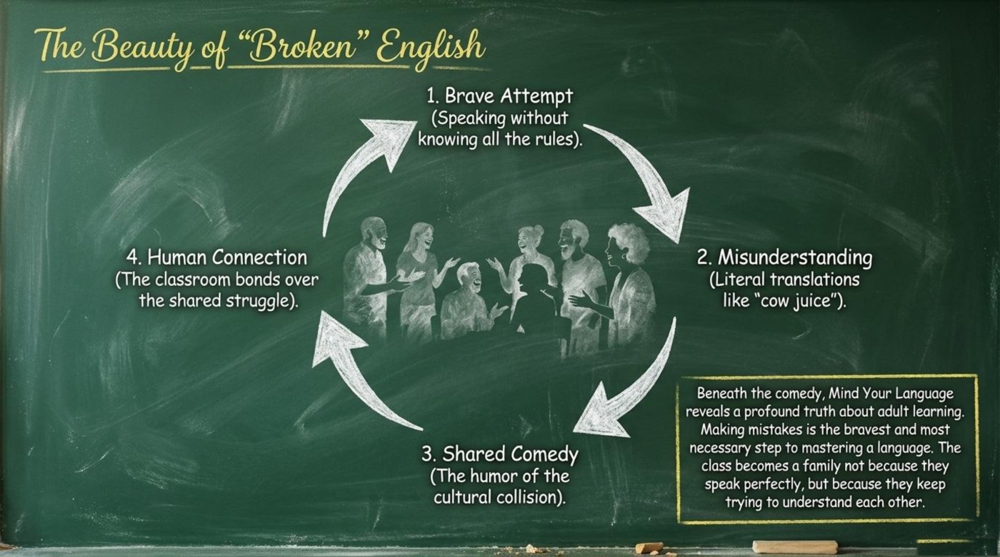
✅ Comprehension Check
The quiz below gathers eight questions from the episode and its presentation. Each answer delivers instant feedback with a short explanation, and the score bar tracks progress from start to finish. A perfect run earns the respect of the strictest principal in London, and even a single honest attempt puts you ahead of the class.
The lesson’s own homework sheet extends the same questions beyond the episode, and it deserves a place in any study routine built around this material. The first prompt asks which idioms for hard work exist in the reader’s native language, compared with Mr. Brown’s command about shoulders and wheels. The second invites an explanation of why English keeps separate words for the live animal and for the meat on the table. The third imagines a 58-hour lock-in and asks which culturally specific story or joke would pass the time. Written answers to any of the three make an excellent next step after the quiz, because they push the episode’s situations into your own experience.
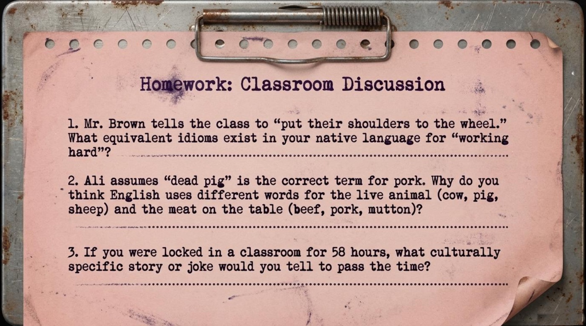
🎓 Class Dismissed — The Shared Laughter
The presentation ends on a chalkboard line that deserves to outlive the episode itself.
“Language is more than getting the words right. It’s the shared laughter when we get them wrong.”
🎓 The final chalkboard of the lesson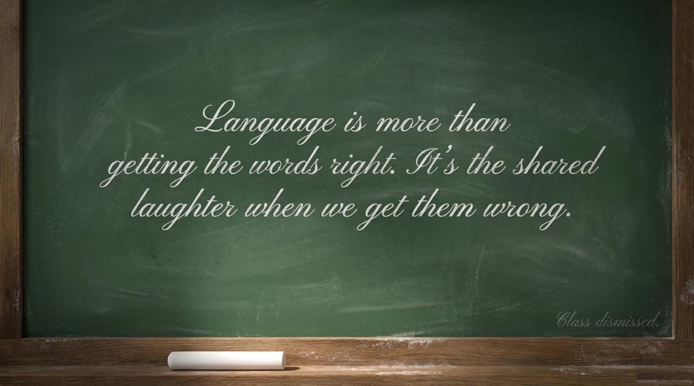
The main takeaway for language learners comes from the closing diagram of the presentation: making mistakes is the bravest and most necessary step to mastering a language. The students of this fictional classroom become a family through their errors, and the same mechanism works in real classes, chat groups, and offices half a century later. The next step is practice: rewatch the episode with subtitles, play the interactive game linked at the top of this article, answer one homework prompt in writing, and then try one deliberately imperfect sentence in real conversation today. The laughter that follows will be doing more teaching than you expect. Class dismissed.
📎 Lesson Files
The complete lesson presentation is available below. Every image in this article is hosted in the same folder as the original materials.
- 📄 mind-your-language-104.pdf — the full lesson presentation (opens in a new tab)